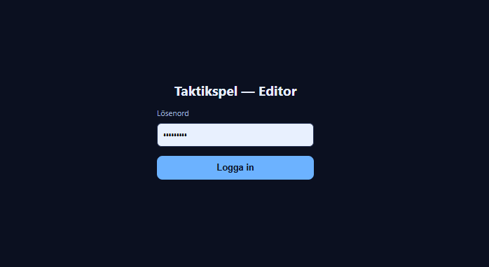
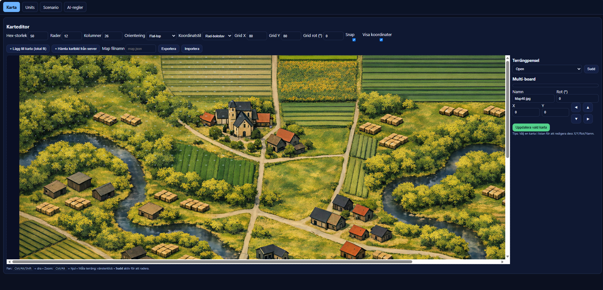
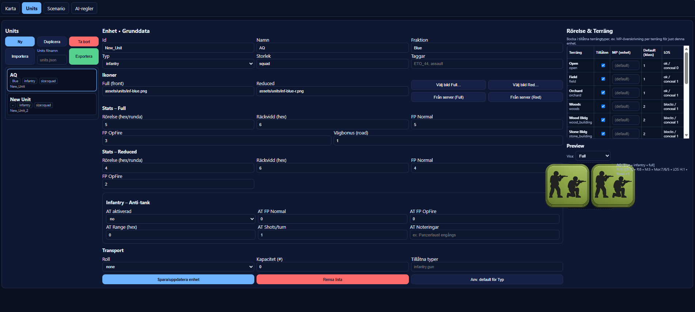
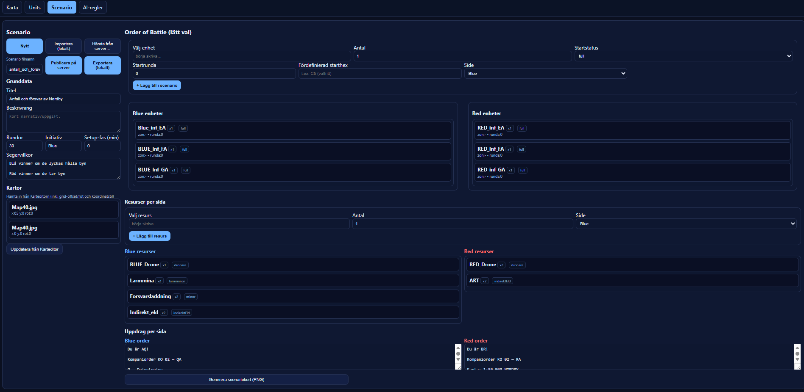
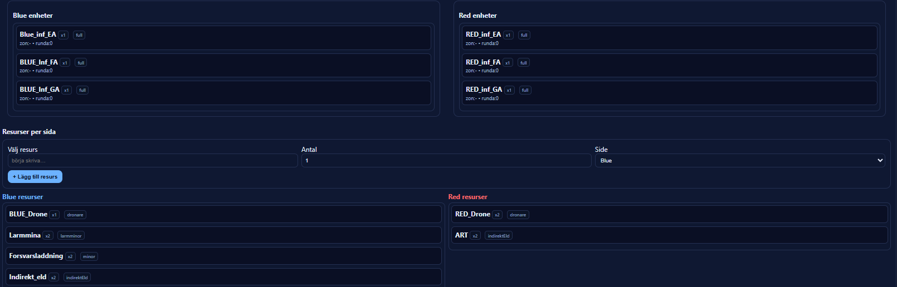
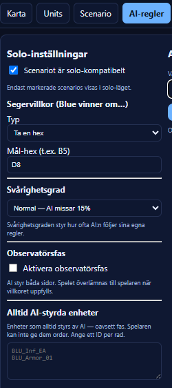
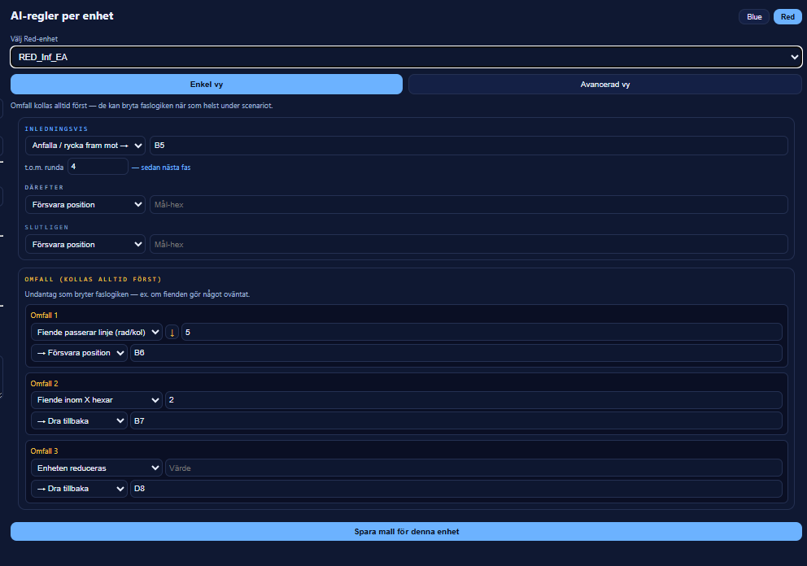
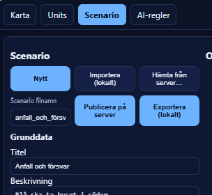

Skapa ett scenario
Editorn är instruktörens verktyg. Du bygger karta, sätter upp enheter, skriver uppdragsbeskrivningen och programmerar hur röda motståndare ska agera — allt i fyra flikar.
01 Editorns fyra flikar
Längst upp på sidan finns fyra flikar. Du jobbar i dem i ordning — från vänster till höger.
| Flik | Vad du gör här |
|---|---|
| Karta | Välj kartbild, ställ in hexgrid och rita terrängtyper på varje hex. |
| Units | Bygg och redigera ett bibliotek av enhetstyper med namn, ikon och stridsdata. Dessa är mallar som du sedan väljer ur när du sätter ihop scenariot. |
| Scenario | Sätt ihop scenariots Order of Battle, resurser och uppdragsbeskrivning per sida. |
| AI-regler | Aktivera solo-läge, ange segervillkor och programmera hur varje röd enhet ska bete sig. |
02 Logga in i editorn
Öppna editorns adress
Navigera till /editor.html på spelservern. Du möts av en inloggningsruta med lösenordsfält.

Ange editorlösenordet och klicka "Logga in"
Editorlösenordet är detsamma som används för att spara scenarier på servern. Fråga din systemadministratör om du inte vet det.
03 Rekommenderat arbetsflöde
04 Karta Rita karta och terräng
Hämta kartbild från server
Klicka på + Hämta kartbild från server. Välj en bild ur listan — den laddas in som bakgrundsbild på hexkartan.

Justera hexgridet
Ange Hex-storlek, antal Rader och Kolumner tills hexrutnätet matchar kartbilden. Använd Grid X / Grid Y för att förflytta gridet och Grid rot om kartan är vriden. Kryssa i Visa koordinater för att se hex-adresserna på kartan.
Rita terrängtyper
Välj terrängtyp i verktygspanelen till vänster och klicka sedan på hexar för att tilldela terräng. Terrängtypen styr rörelsekostnad, skydd och siktlinje i spelet. Du behöver inte rita öppen mark — det är standardvärdet.
05 Units Enhetsbiblioteket
Units-fliken är ett bibliotek med enhetstyper — mallar du kan återanvända i flera scenarier. Här skapar du enheter med namn, ikon och stridsdata, men placerar dem inte på kartan (det görs i Scenario-fliken).
Lägg till en ny enhet
Klicka på + Ny enhet. En ny enhet med standardvärden skapas och öppnas direkt för redigering.

Fyll i namn, fraktion och typ
Id genereras automatiskt från namn och fraktion — du kan lämna det som det är. Fraktion är t.ex. BLU eller RED. Typ påverkar vilka terrängtyper enheten tillåts i (infanteri vs. fordon).
Välj ikon
Klicka Välj ikon (full) för att se tillgängliga bilder på servern. Välj en ikon — den visas i förhandsgranskningen och på hexkartan under spelet.
Ange stridsdata och klicka "Spara enhet"
Se nästa avsnitt för en genomgång av alla stridsdata-fält.
06 Enhetsegenskaper — stridsdata
Varje enhet har värden för full styrka och reduced styrka. Reduced-värdena används automatiskt när enheten tagit förluster.
FP Eldkraft (1–10)
Enhetens anfallsstyrka. FP 5 = ±0. Varje steg upp ger +1 på träffslaget. FP 8 ger alltså +3.
Räckvidd Range (hex)
Max antal hexar enheten kan skjuta. Utanför räckvidd öppnas ingen eld alls.
Rörelse Move (pips)
Antal rörelse-pips per runda. Terrängen kostar pips — skog kostar mer än öppen mark.
Moral Morale
Tre värden: normal / gul-suppressed / röd-suppressed. Påverkar när enheten bryts och vilken effekt fiendens eld ger.
OP Fire Opfire-FP
Eldkraft vid reaktionseld (opfire) — när enheten skjuter på fiendens rörelse. Ofta lägre än normal FP.
Terräng Tillåten terräng
Matrisen visar vilka terrängtyper enheten kan röra sig i. Stäng av obefärd terräng för fordon.
| FP | Modifier | Exempelenheter |
|---|---|---|
| 3–4 | −1 till −2 | Radioenhet, obeväpnad spejare |
| 5 | ±0 | Standard infanterisekt |
| 6–7 | +1 till +2 | Infanteripluton med MG, pansarfordon |
| 8–9 | +3 till +4 | Pansarvärnsgrupp, stridsvagn |
| 10 | +5 | Tung pansarenhet — använd sparsamt |
07 Scenario Grunddata
I Scenario-flikens vänstra kolumn fyller du i scenariots metadata och kopplar ihop det med kartan.
Ange Titel och Beskrivning
Titel är scenariots namn — det visas i spellistan. Beskrivning är en kort sammanfattning av situationen (1–3 meningar).
Ange antal Rundor
Hur många rundor scenariot maximalt pågår. I solo-läge förlorar blå om segervillkoret inte är uppfyllt när rundorna tar slut.
Fyll i Segervillkor (fritext)
Det här fältet är en fritexter-beskrivning som visas för spelarna — t.ex. "Ta och håll hexen E9 i tre rundor; minimera förluster." Det maskinläsbara segervillkoret för solo-läget ställer du in separat i AI-regler-fliken.
Koppla kartan
Klicka Uppdatera från Karteditor för att hämta in hexgridet från Karta-fliken. Du behöver göra detta varje gång du ändrar kartinställningarna.

08 Scenario Sätta ihop Order of Battle
I den högra kolumnen av Scenario-fliken sätter du ihop vilka enheter som ingår i just detta scenario — du väljer ur enhetsbiblioteket du byggde i Units-fliken.
Välj enhet i sökfältet
Börja skriva enhetens namn i fältet Välj enhet — en lista med matchande enheter ur biblioteket visas. Klicka för att välja.
Ange startstatus och startposition
Startstatus: full (hel styrka) eller reduced (redan försvagad). Fördefinierad starthex: t.ex. C5 — om du lämnar blankt kan GM placera enheten manuellt i spelet. Side: välj Blue eller Red.
Klicka "+ Lägg till i scenario"
Enheten dyker upp i antingen Blue enheter- eller Red enheter-listan beroende på vald sida. Upprepa för alla enheter.

Ta bort en fellagd enhet
Klicka på papperskorgsikonen bredvid enheten i Blue- eller Red-listan.
09 Scenario Resurser per sida
Resurser är indirekta eldmedel — artilleri, granatkastare eller liknande. De tilldelas per sida och visas i spelgränssnittet som klickbara resurser.
Välj resurs och antal
Sök i fältet Välj resurs, ange antal och välj sida (Blue eller Red).
Klicka "+ Lägg till resurs"
Resursen visas i Blue resurser- eller Red resurser-listan. Om du inte lägger till några resurser kan sidorna inte använda indirekt eld i scenariot.
10 Scenario Uppdrag per sida
Längst ned i Scenario-flikens högra kolumn finns två textfält — ett för Blue och ett för Red. Det är den fullständiga uppdragsbeskrivningen varje sida ser i sin överlämning när spelet startar.
Blue order
Skriv Blue-lagets uppdrag, situation och tillgängliga resurser här. Det är vad deltagarna på Blue sida ser i sin briefing.
Red order
Skriv Red-lagets uppdrag om du kör PvP. I solo-läge visas detta inte för spelarna men kan vara användbart för GM vid genomgång.
Exempeltext — Blue order
Situation: Röda styrkor har ockuperat byn Marken. Egna styrkor grupperar norr om byn.
Uppgift: Ta kontroll över kyrkan (hex E6) senast efter runda 8.
Resurser: 1 infanteripluton (3 grupper) + 1 prickskyttegrupp. Inga artilleriresurser.
11 AI-regler Solo-inställningar
Den vänstra kolumnen i AI-regler-fliken styr om och hur scenariot fungerar i solo-läge.
Välj segervillkorstyp i rullgardinen — det här är det automatiska villkoret som spelet kollar efter varje runda i solo-läge.
| Villkorstyp | Extra inställning | Innebär |
|---|---|---|
| Ta en hex | Ange mål-hex, t.ex. E6 | Blå ska ha en enhet på hexen. |
| Håll en hex i N rundor | Mål-hex + antal rundor | Blå ska sitta på hexen oavbrutet. |
| Eliminera specifik enhet | Ange enhet-ID | Den namngivna röda enheten måste vara utslagen. |
| Eliminera alla röda | Inga extra val | Alla röda enheter utslagna. |
| Överlev N rundor | Antal rundor | Blå ska ha minst en enhet kvar. |
Styr hur konsekvent röd AI följer sina regler.
| Nivå | Vad det innebär | Passar för |
|---|---|---|
| Lätt | AI missar 35 % av reglerna och agerar slumpmässigt. | Nybörjare, första övningen |
| Normal | AI missar 15 % av reglerna. | Standardinställning för de flesta övningar |
| Svår | AI följer alltid reglerna exakt. | Erfarna deltagare, slutprov |

12 AI-regler Programmera enheter — Faser
I den högra kolumnen av AI-regler-fliken programmerar du hur varje röd enhet beter sig i solo-läge. Välj enhet i rullgardinen och arbetar sedan med Enkel vy.
Varje enhet har ett fasschema — en tidslinje med tre på varandra följande beteenden: Inledningsvis, Därefter och Slutligen. Du anger vilken order enheten ska utföra i varje fas och (valfritt) hur länge fasen varar.
Enhetens startbeteende — t.ex. "Försvara - Defend" de tre första rundorna medan de väntar på blå framryckning.
Ange t.o.m. runda för att begränsa hur länge fasen pågår. Lämnar du det blankt håller fasen tills scenariot är slut.
Beteendet som tar vid när Inledningsvis-fasen tar slut — t.ex. "Ta - Seize → hex C4" för att röra sig fram.
Slutfasen — t.ex. "Försvara - Defend" vid den erövrade positionen när enheten är på plats.
| Order | Kräver mål-hex | Vad enheten gör |
|---|---|---|
| Ta - Seize → | Ja | Rör sig mot angiven hex, öppnar eld längs vägen. |
| Försvara - Defend | Nej | Stannar och håller positionen, öppnar eld på fiender inom räckvidd. |
| Dra tillbaka - Fallback | Ja | Rör sig mot angiven hex, prioriterar att röra sig bort från fienden. |
| Spana - Reconnoitre → | Ja | Rör sig mot hex utan att öppna eld — renodlad spaning. |
| Avvakta - Hold | Nej | Enheten stannar och gör ingenting — t.ex. i väntan på omfall. |
Välj röd enhet i rullgardinen
Se till att Red-knappen är aktiv (blå = Blue-enheter, röd = Red-enheter). Välj enheten du vill programmera.
Klicka "Enkel vy" om den inte redan är aktiv
Faserna och omfallen visas nu under enhetsväljarens.

Välj order för Inledningsvis-fasen
Välj order i rullgardinen. Om ordern kräver mål-hex: klicka i mål-hex-fältet och klicka sedan på kartan för att välja hex, eller skriv adressen direkt (t.ex. C5). Ange "t.o.m. runda" om fasen ska ha en tidsgräns.
Fyll i Därefter och Slutligen
Upprepa för de två återstående faserna. Du kan lämna en fas tom (— ingen order —) om du inte vill att enheten byter beteende.
13 AI-regler Omfall — undantag som bryter faslogiken
Nedanför faserna finns tre Omfall. De kollas före faslogiken varje runda — om ett omfall matchar tar det över oavsett vilken fas enheten är i. Använd dem för att hantera oväntade situationer.
Varje omfall har ett villkor (rullgardin) och en order att utföra om villkoret är sant.
Lämna villkoret på — inaktivt — om du inte behöver alla tre omfall.
| Villkor | Extra värde | Utlöses när… |
|---|---|---|
| Fiende inom X hexar | Ange avstånd, t.ex. 4 | En blå enhet befinner sig inom angivet avstånd. |
| Fiende passerar linje | Ange rad/kol, t.ex. D | En blå enhet passerar en rad- eller kolumngräns på kartan. |
| Fiende vid hex X | Ange hex, t.ex. E6 | En blå enhet befinner sig på angiven hex. |
| Från och med runda X | Ange rundan, t.ex. 5 | Rundan har nåtts — kan användas som en extra "fas". |
| Enheten reduceras | Inget extra värde | Denna röda enhet har tagit förluster och blivit reduced. |
| Enhet X eliminerad | Ange enhet-ID | Den angivna enheten (röd eller blå) är utslagen. |
Exempelprogram — försvarare vid bron
Enheten försvarar normalt men faller tillbaka om den tar förluster eller om fienden tränger sig nära — oavsett vilken fas den är i.
14 Spara och publicera scenariot
Ange ett filnamn
I fältet Scenario filnamn i Scenario-fliken skriver du ett tydligt filnamn, t.ex. övning-marken-v1.json. Undvik mellanslag och svenska tecken i filnamnet.
Klicka "Publicera på server"
Hela scenariot — karta, enheter, AI-regler och solo-inställningar — laddas upp och är omedelbart tillgängligt för deltagare att ladda i spelet.

Testa scenariot i solo-läge
Öppna spelet i ett nytt fönster, välj solo-läge och ladda scenariot. Kör igenom 3–4 rundor och kontrollera att: röda enheter rör sig som planerat, omfallen fungerar, segervillkoret detekteras rätt.
Justera och publicera på nytt
Gå tillbaka till editorn, justera det som inte fungerade och publicera med samma filnamn — det befintliga scenariot skrivs över.
v1, v2) under testfasen — publicera utan versionsnummer först när scenariot är klart för deltagarna.